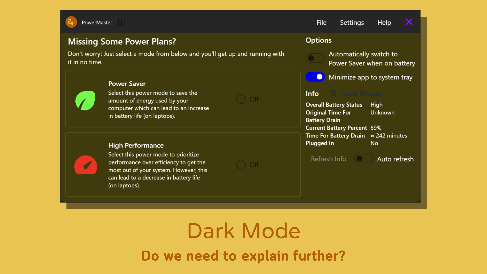
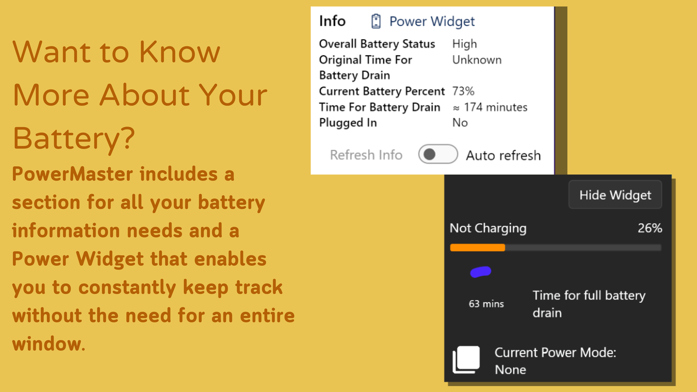
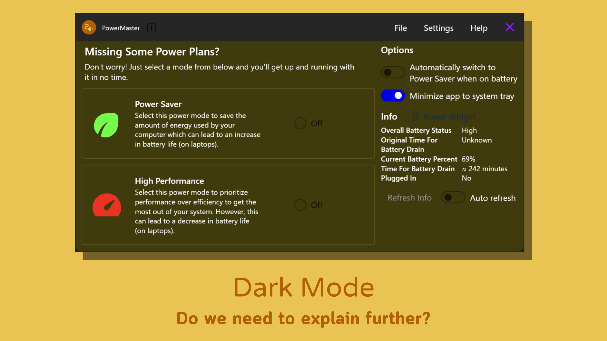
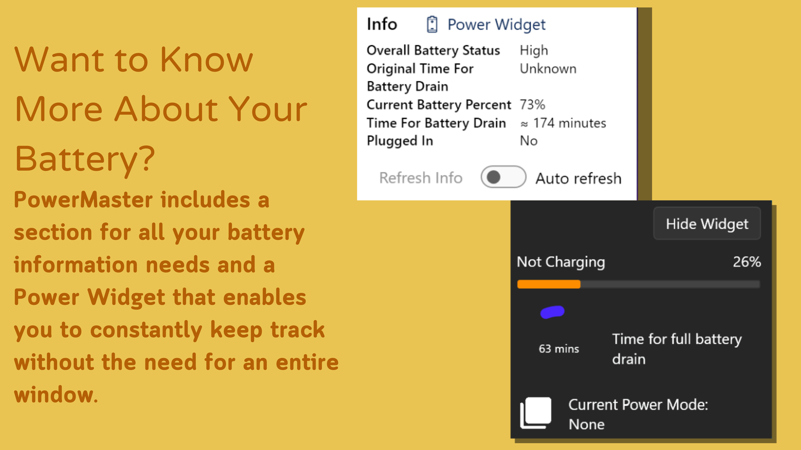

PowerMaster
FEATURES SCREENSHOTSPowerMaster
FEATURES SCREENSHOTS
Can't find the previously-included power plans in your computer's control panel? Or do you just want to get the most power efficiency or performance out of your device? PowerMaster is the app that solves this with an easy-to-use UI that allows you to quickly change your power mode with just a couple of clicks.
 


